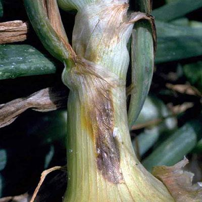
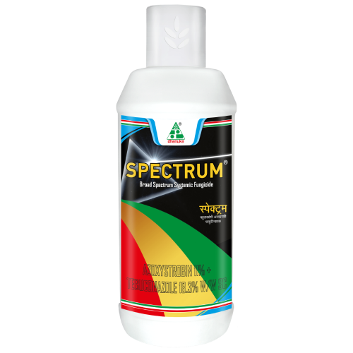

Problems Faced By Farmers
There are many problems faced during onion production in which losses caused by pest and disease is the major one and Farmers are also having less technical knowlegde. Along with that losses due to improper storage facility will also Effect the Quality of the produce.
| Pests Or Diseases | Recommended Product Solutions |
|---|---|
narrow leaf |
 |
thrips |
 |
purple blotch |
 |
for good |